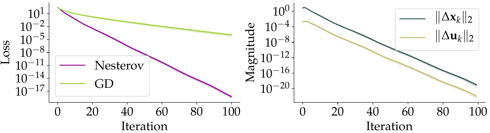
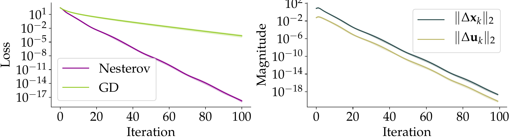
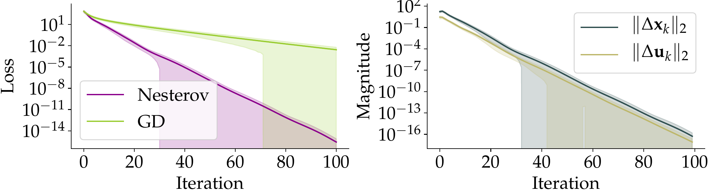

For a new class of non-convex objectives — which includes deep fully-connected
ReLU networks trained with MSE loss — Nesterov's momentum provably converges at the
accelerated rate \(1 - \Theta(1/\sqrt{\kappa})\), versus \(1 - \Theta(1/\kappa)\)
for plain gradient descent. The analysis is deterministic: full gradients, no noise.
§ 01 · Origins
A stubborn open question
Nesterov's momentum buys gradient descent a factor of \(\sqrt{\kappa}\) on smooth,
strongly convex problems — a textbook result from
Nesterov (2018). For neural
networks, it is long-standing folklore that momentum helps
(Sutskever et al., 2013).
Folklore is not theory, and theory has been stubborn. Three specific obstructions have kept the
field off-balance:
Most neural-network convergence proofs lean on the
Polyak–Łojasiewicz (PL) condition
(Karimi et al., 2016). Under PL, gradient descent
is linear — and Yue et al. (2022) showed it is
rate-optimal. PL alone gives momentum nothing to improve.
Known accelerated rates under PL-like conditions either assume extra structure that is hard
to verify on neural nets
(Wang et al., 2022's \(\lambda^{\star}\)-average),
or only cover shallow / linear networks
(Wang et al., 2021;
Liu et al., 2022).
In a non-convex setting, just constructing a working Lyapunov function for Nesterov's
iteration is delicate. There can be many global minima, so the classical
estimating-sequence argument breaks.
The question, one sentence: is there a realistic regulatory condition on the loss of a
deep network under which Nesterov's momentum provably accelerates?
§ 02 · The Idea
The partition model
The paper refuses the false dichotomy between "fully strongly convex" and "only PL".
What if the parameters split into two pieces, and only one piece behaves nicely?
Formally, we minimize
where \(f\) is smooth and \(\mu\)-strongly convex in \(\mathbf{x}\) alone, with mild
Lipschitz-in-\(\mathbf{u}\) control on the model and gradient, plus a "universal optimality"
assumption — the minimum over \(\mathbf{x}\) for any fixed \(\mathbf{u}\) in a small
neighborhood around initialization already hits the global minimum. Crucially, \(f\) is
never required to be convex or even smooth in \(\mathbf{u}\).
Fig. 1
The partition model. Gradient methods are agnostic to this partition — they never see
it. But the analysis uses the structure to bound how updates on \(\mathbf{u}\) perturb progress on
\(\mathbf{x}\).
Assumption
What it says
A1. Partial strong convexity
\(f\) is \(\mu\)-strongly convex in \(\mathbf{x}\) for every fixed \(\mathbf{u}\) near \(\mathbf{u}_0\).
A2. Partial smoothness
\(f\) is \(L_1\)-smooth in \(\mathbf{x}\).
A3. Outer-loss smoothness
\(f = g\circ h\) with \(g\) being \(L_2\)-smooth (MSE, logistic, …).
A4. \(h\) is \(G_1\)-Lipschitz in \(\mathbf{u}\)
Model output changes slowly with \(\mathbf{u}\).
A5. \(\nabla_{\mathbf{x}} f\) is \(G_2\)-Lipschitz in \(\mathbf{u}\)
The \(\mathbf{x}\)-gradient is stable under \(\mathbf{u}\) perturbations.
A6. Universal optimality
\(\min_{\mathbf{x}} f(\mathbf{x},\mathbf{u}) = f^{\star}\) for every \(\mathbf{u}\) in a small neighborhood around initialization — fully optimizing \(\mathbf{x}\) at any such \(\mathbf{u}\) already reaches the global min.
These assumptions sit strictly between smooth-plus-strongly-convex (which implies them)
and PL (which they imply). Proof techniques for this class do real work beyond the PL literature.
Most of the signal in the gradient flows through \(\mathbf{x}\).
The wild side of the network is not dead — it is just quieter than the nice side.
§ 03 · The Theorem
Acceleration, deterministically
Run Nesterov's momentum with constant step \(\eta\) and momentum parameter \(\beta\), with
no awareness of the partition:
Under Assumptions A1–A6 (more details in the paper), with \(G_1, G_2\) sufficiently small
and \(R_{\mathbf{x}}, R_{\mathbf{u}}\) sufficiently large, choose \(\eta = \Theta(1/L_1)\) and
\(\beta = \tfrac{4\sqrt{\kappa}-\sqrt{c}}{4\sqrt{\kappa}+7\sqrt{c}}\). Then
Compared with gradient descent under the same assumptions, which converges at
\(1 - \Theta(1/\kappa)\) (Theorem 6), momentum earns the familiar factor of \(\sqrt{\kappa}\).
This does not correspond to an actual experiment, but is shown for illustration purposes only.
Error is plotted on a log scale — standard convention, smaller is better.
Both methods start at error 1. The dashed line is a target accuracy of 10−2.
The two dots mark the iteration at which each method hits that target. At \(\kappa = 100\),
GD takes roughly ten times as long as Nesterov; drag the slider to see how the gap
scales with \(\sqrt{\kappa}\).
Read the fine print
The theorem is conditional. For the bound to apply, the paper requires
plus lower bounds on \(R_{\mathbf{x}}, R_{\mathbf{u}}\). Translation: the non-convex part of
the problem has to be a sufficiently mild perturbation of the nice part. When \(G_1, G_2\)
are not small, the guarantee breaks — and, as the experiments below show, so does the empirical
advantage.
§ 04 · Craft
Two difficulties, two lemmas
Under strong convexity, the standard
Bansal–Gupta (2019) Lyapunov function uses the
global minimizer \(\mathbf{w}^{\star}\) as a reference point. In the partition model,
two things break at once.
Difficulty 1. \(f\) can have many global minima, so there is no canonical
anchor. The paper's fix: re-anchor to \(\mathbf{x}^{\star}(\mathbf{u}_k) = \arg\min_{\mathbf{x}} f(\mathbf{x},\mathbf{u}_k)\) —
a moving reference point. This requires controlling how fast the anchor slides:
Fig. 2
As \(\mathbf{u}\) drifts during Nesterov's iteration, the reference minimizer
\(\mathbf{x}^{\star}(\mathbf{u})\) slides along with it. Lemma 8 caps the slide by \(G_2/\mu\)
— which is why the paper needs \(G_2\) small.
Difficulty 2. Nesterov's update evaluates the gradient at the
extrapolated point \((\mathbf{y}_k, \mathbf{v}_k)\), not at \((\mathbf{x}_k, \mathbf{u}_k)\).
Standard bounds of the form \(\|\nabla f\|^2 \leq 2L(f - f^{\star})\) connect to the optimality
gap at the point where the gradient is taken — but we only know the gap at
\((\mathbf{x}_k, \mathbf{u}_k)\). The fix is a gradient-dominance lemma:
this is enough to recover the \(1 - \Theta(1/\sqrt{\kappa})\) rate. The third term absorbs the
errors from updating \(\mathbf{u}\) — a concern standard proofs never have to worry about.
§ 05 · In the Wild
Where the partition actually shows up
Realization 1: additive models. With
\(h(\mathbf{x}, \mathbf{u}) = \mathbf{A}_1 \mathbf{x} + \sigma(\mathbf{A}_2 \mathbf{u})\) under MSE loss,
the objective is non-convex (because of \(\sigma\), which can be ReLU) and potentially non-smooth
— yet the assumptions are satisfied with \(\mu = \sigma_{\min}(\mathbf{A}_1)^2\),
\(L_1 = \sigma_{\max}(\mathbf{A}_1)^2\), \(G_1 = B\,\sigma_{\max}(\mathbf{A}_2)\), and
\(G_2 = B\,\sigma_{\max}(\mathbf{A}_1)\sigma_{\max}(\mathbf{A}_2)\) for a \(B\)-Lipschitz \(\sigma\).
The non-convexity is controlled by \(\sigma_{\max}(\mathbf{A}_2)\) — a single knob.
Realization 2: deep fully-connected ReLU networks. This is the headline.
Partition the parameters into \(\mathbf{x} = \mathrm{vec}(\mathbf{W}_{\Lambda})\) (last-layer weights
— with some complications for handling the null space induced by over-parameterization; see
the paper for details) and \(\mathbf{u} = (\mathrm{vec}(\mathbf{W}_1), \dots, \mathrm{vec}(\mathbf{W}_{\Lambda-1}))\)
(all earlier layers). MSE loss is strongly convex in \(\mathbf{x}\) at fixed \(\mathbf{u}\) provided the
penultimate-layer feature matrix is full-rank — which holds at standard Gaussian initialization
under sufficient width.
Theorem 15 · Informal
For a \(\Lambda\)-layer ReLU network with standard Gaussian initialization, if intermediate widths
are \(\Theta(m)\) and the penultimate width satisfies
\(d_{\Lambda-1} = \Omega(n^{4.5}\max\{n, d_0^2\})\), then Nesterov's momentum trained on MSE loss
satisfies
with high probability over initialization. To our knowledge, this is the first
accelerated convergence rate proven for a non-trivial (i.e., non-shallow, non-linear)
neural-network architecture.
What this is, and is not
The width requirement \(\Omega(n^{4.5}\max\{n, d_0^2\})\) — which simplifies to
\(\Omega(n^{5.5})\) when \(d_0 \leq n\) — is a sufficient condition for the proof.
Like much of the NTK literature, it is not a claim about what works in practice. The same
caveat applies to the "sufficiently small \(G_1, G_2\)" conditions: the result tells you
when acceleration is provable, not that your favourite over-parameterized network
clears the bar. Empirically, networks seem to benefit from momentum well outside this regime;
proving that requires new ideas.
§ 06 · Evidence
Three regimes, one knob
The cleanest empirical test is the additive model with
\(h(\mathbf{x}, \mathbf{u}) = \mathbf{A}_1\mathbf{x} + \sigma(\mathbf{A}_2\mathbf{u})\), ReLU
nonlinearity, MSE loss. Both \(G_1\) and \(G_2\) scale with \(\sigma_{\max}(\mathbf{A}_2)\), so
sweeping that single knob traces out in-theory vs out-of-theory regimes.
Left columns: loss vs iterations (mean over 10 trials; shaded = std). Right columns: evolution
of \(\|\Delta \mathbf{x}_k\|_2\) vs \(\|\Delta \mathbf{u}_k\|_2\).

Fig. 3a · In-regime
\(\sigma_{\max}(\mathbf{A}_2) = 0.01\). Deep in the regime of the theorem. Nesterov (purple) clearly
accelerates over GD (green). Std bands are tiny; per-trial behaviour is reproducible. Right:
\(\|\Delta \mathbf{x}_k\|_2 \gg \|\Delta \mathbf{u}_k\|_2\), and both decay linearly —
matching the prediction of Lemma 10.

Fig. 3b · On the edge
\(\sigma_{\max}(\mathbf{A}_2) = 0.3\). Nesterov still accelerates, but the update on \(\mathbf{u}\)
is closer in magnitude to the update on \(\mathbf{x}\). The dashed line for
\(\|\Delta \mathbf{u}_k\|\) visibly climbs relative to \(\|\Delta \mathbf{x}_k\|\), as the gradient-dominance
bound predicts.

Fig. 3c · Outside the theorem
\(\sigma_{\max}(\mathbf{A}_2) = 5\). Shaded bands widen: initialization now matters, and the
Nesterov advantage becomes fragile. Exactly what the conditional nature of the theorem predicts
— the bound is telling the truth in both directions.
The last plot is, in a way, more informative than the first.
It shows what fails when the partition-model assumptions are violated.
The theorem does not predict that momentum stops working outside its regime; it predicts
that the tight acceleration guarantee no longer holds and outcome variance grows. Both predictions
are visible above.
§ 07 · Ledger
What is proven, what is open
✓ Proven here
GD gets rate \(1 - \Theta(1/\kappa)\) on the partition model (Thm 6).
Nesterov's momentum gets \(1 - \Theta(1/\sqrt{\kappa})\) on the partition model (Thm 7), under small-\(G_1,G_2\) conditions.
Additive models satisfy the assumptions; acceleration holds when the non-convex amplitude \(\sigma_{\max}(\mathbf{A}_2)\) is small enough (Thm 13).
Deep FC ReLU nets trained with MSE under standard Gaussian init satisfy the assumptions at width \(\Omega(n^{4.5}\max\{n, d_0^2\})\) (Lemma 14).
Nesterov's rate on deep FC ReLU nets is \(1 - \Theta(1/\sqrt{\kappa})\) — the first such result for a non-trivial architecture (Thm 15).
↪ Open / next
Removing the universal-optimality assumption (A6) — what if fully optimizing \(\mathbf{x}\) does not reach \(f^{\star}\)?
Beyond fully-connected ReLU — do CNNs and ResNets admit a similar partition?
Connecting to neural-network pruning — does the Lottery Ticket Hypothesis preserve partition-model structure?
Tightening the width requirement — is \(n^{4.5}\) the right exponent?
§ 08 · Final notes
Why we wrote this paper
Acceleration is one of the great stories of convex optimization — since
Nesterov's 1983 result, the \(\sqrt{\kappa}\) speedup has been celebrated, generalized, and
taught as canonical. For non-convex optimization, the story has been a persistent
mystery. Neural-network trainers empirically reach for momentum; theorists have struggled to
say why.
Two prior negative results explain the difficulty. Under the Polyak–Łojasiewicz condition
— the standard scaffolding for non-convex convergence proofs in deep learning —
Yue et al. (2022) showed that gradient descent is
already rate-optimal; no \(\sqrt{\kappa}\) left for momentum. For the Heavy Ball method,
Goujaud et al. (2023) proved it cannot accelerate
even on smooth and strongly convex functions.
Our hope is to carry the machinery of convex-optimization theory an ε-step beyond
the class of convex functions — and to keep the speedup intact on the way out.
The partition model sits strictly between PL and full strong convexity: strong enough to
support an accelerated Lyapunov argument, weak enough to cover deep ReLU training with MSE.
To our reading, this is the first time the convex toolbox has been extended to a non-shallow,
non-linear neural-network setting while keeping the accelerated rate. One step, not a mile.
Caveats, one more time
Everything above is for full-batch gradients, fully-connected ReLU networks,
and MSE loss, under standard Gaussian initialization with width \(\Omega(n^{5.5})\) (assuming
\(d_0 \leq n\)). We do not claim the result applies to practical ResNet training, nor
that Nesterov is empirically the best optimizer in any given application. What we claim is that
theory has caught up to a well-known empirical phenomenon in one clean regime, and that the
proof technique generalizes further than it may initially appear.
Cite as
F. Liao and A. Kyrillidis.
Provable Accelerated Convergence of Nesterov's Momentum for Deep ReLU Neural Networks.
International Conference on Algorithmic Learning Theory (ALT), PMLR vol. 237, 2024.
[PDF]